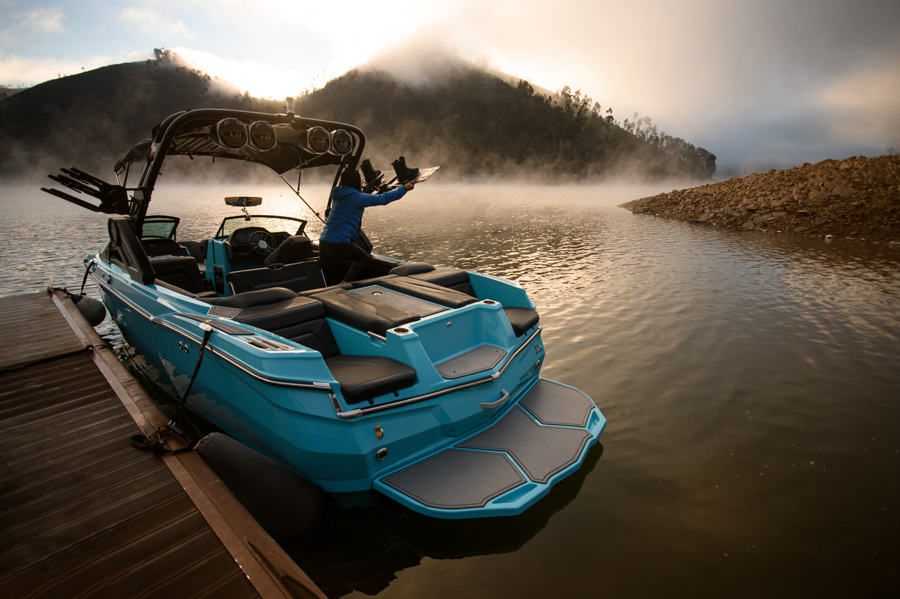

Complete Pre-Season Service: Oil Change, V-Drive, Transmission, & Impeller Replacement – We Come to You!
🚤 Mobile Service Available Throughout Fresno, Clovis & Madera Ranchos | ⏱️ Typical Service Time: 2-4 Hours
Memorial Day weekend marks the unofficial start of boating season in Central California. Don't let preventable maintenance issues ruin your summer on Millerton Lake or Pine Flat Reservoir. Our comprehensive pre-season package ensures your boat is ready for months of worry-free fun on the water.
A failed impeller or contaminated oil can cause engine overheating and catastrophic damage. Our preventive maintenance catches issues before they strand you on the lake.
Fresno summers regularly exceed 100°F. Fresh synthetic oil and a new impeller ensure your cooling system handles extreme temperatures without overheating.
V-drives and transmissions operate under immense stress. Clean fluids reduce friction, prevent wear, and extend the life of these expensive components.
Regular oil changes are the single most important maintenance task for marine engines. Premium synthetic oil provides superior protection against heat and wear.
Documented maintenance history significantly increases resale value. Our service records prove your boat has been properly cared for.
Spend your weekends enjoying the water with family, not worrying about mechanical problems. Our thorough service gives you confidence on every outing.
Our comprehensive seasonal service covers all the critical maintenance your inboard or V-drive boat needs before hitting Fresno's lakes and reservoirs. Every service is performed by experienced technicians using premium parts and fluids.
What We Do: Drain old engine oil, replace with high-quality synthetic marine oil (Valvoline or Mobil 1), and dispose of used oil responsibly.
Why It Matters: Synthetic oil withstands extreme heat better than conventional oil, crucial for Central Valley summers. It also flows better at startup, reducing engine wear.
What We Do: Remove old filter, install new OEM-quality filter, and ensure proper seal to prevent leaks.
Why It Matters: The filter removes contaminants that can damage engine components. A clogged filter reduces oil flow and protection.
What We Do: Drain old V-drive fluid, inspect for metal particles (indicating wear), and refill with manufacturer-recommended fluid.
Why It Matters: V-drives transfer power from the engine to the propeller. Clean fluid prevents gear wear and ensures smooth operation.
What We Do: Replace transmission fluid with fresh, manufacturer-specified fluid to ensure smooth shifting and power transfer.
Why It Matters: Contaminated transmission fluid causes rough shifting and can lead to expensive transmission failure.
What We Do: Remove old impeller, inspect housing for damage, install new OEM or premium aftermarket impeller, and test cooling system flow.
Why It Matters: The impeller pumps cooling water through your engine. A worn impeller causes overheating, which can warp cylinder heads or crack engine blocks. This is the #1 cause of catastrophic engine failure in boats. Learn more about impeller maintenance.
If you store your boat at home in Fresno, Clovis, or Madera Ranchos, we come to you. No need to trailer your boat to a shop or marina.
We can service boats stored at local marinas near Millerton Lake or Pine Flat Reservoir. Just coordinate access with your marina.
This package is specifically designed for inboard and V-drive boats (wakeboard boats, ski boats, cruisers). Not sure if your boat qualifies? Give us a call.
If you use your boat regularly during summer for watersports, fishing, or cruising, this service ensures reliable performance all season long.
We bring the shop to you. No trailering, no waiting at a marina, no wasted weekends. We service your boat at your home, storage facility, or marina.
We know Fresno boating. We understand Central Valley heat, local water conditions, and the specific challenges boats face in our climate.
$499 flat rate. No hidden fees, no surprises. You know exactly what you're paying before we start.
Most services completed in 2-4 hours. We respect your time and work efficiently without cutting corners.
We stand behind our work. If you're not satisfied, we'll make it right. Your boat's performance is our reputation.
We use premium brands like Valvoline Marine and Mobil 1 Marine, plus OEM or better replacement parts.
Slots fill up fast as Memorial Day approaches. Don't wait until the last minute – book your service today and ensure your boat is ready for opening weekend.
Serving Woodward Park, Fig Garden, Clovis North, Dry Creek, and surrounding areas.
Typically 2-4 hours depending on your boat's configuration and accessibility. We'll give you a more precise estimate when you book.
No! That's the beauty of mobile service. We come to wherever your boat is stored – your driveway, garage, storage facility, or marina.
We specialize in inboard and V-drive boats (wakeboard boats, ski boats, cruisers). We do not currently service outboard motors or personal watercraft (jet skis).
This is our pre-season package designed for annual spring maintenance. However, we also offer mid-season oil changes and fall winterization services.
Yes! We accept all major credit cards, debit cards, cash, and Venmo. Payment is due upon completion of service.
We'll inspect your boat during service and let you know if we notice any issues. We can provide quotes for additional work like fuel filter replacement, spark plugs, or cooling system repairs.
Yes, if your boat is stored at a marina or slip with reasonable access. We may charge a small travel fee for remote locations. Call us to discuss your specific situation.
We use premium synthetic marine oils from Valvoline or Mobil 1, and OEM or premium aftermarket filters and impellers. All parts meet or exceed manufacturer specifications.
Every summer, thousands of boaters experience preventable breakdowns that cost thousands in repairs and ruin precious weekends. A $499 investment in preventive maintenance now saves you from $3,000+ in emergency repairs later.
Also offering: Auto Oil Changes | Pricing | Contact Us